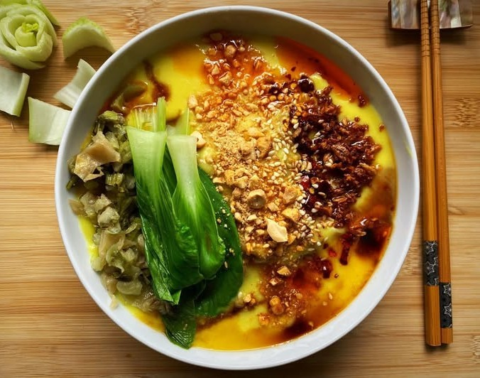
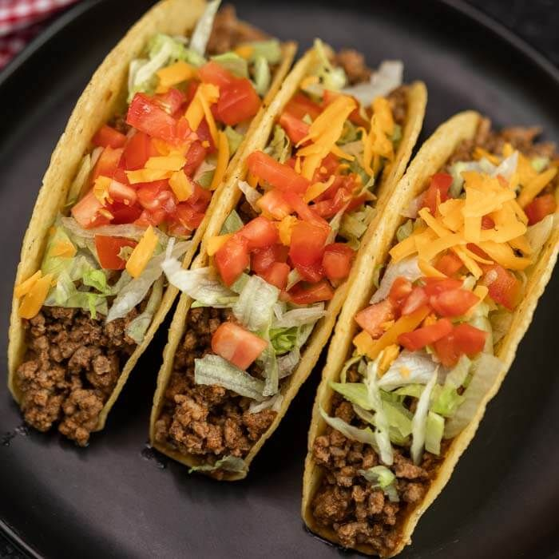
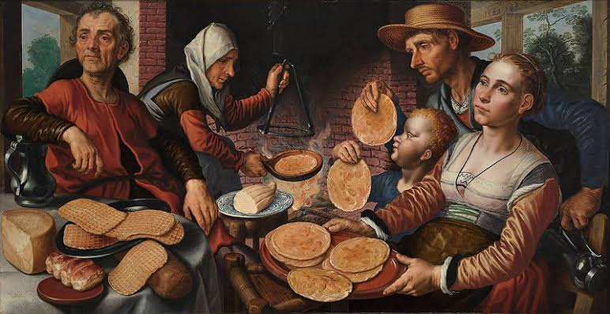

Every dish
has a
story.
Travel the world through its most loved foods. Discover signature dishes, fascinating histories, and recipes from 30 countries across six regions.



Three dishes you should know
Start your global food journey with three internationally recognized classics.

Find flavors around the world
Select a continent on the map or choose one of the six regions below.
Explore by region
Five countries and one unforgettable signature dish in every region.
Asia
A world of aromatic spices, street-food favorites, and centuries-old traditions.
Explore 5 countries ↗Africa
Colorful grains, aromatic stews, and recipes shared across generations.
Explore 5 countries ↗Europe
From rustic family tables to world-famous bakery and café classics.
Explore 5 countries ↗North America
Bold street foods, comforting classics, and vibrant island flavors.
Explore 5 countries ↗South America
A delicious mix of indigenous ingredients, grills, and coastal specialties.
Explore 5 countries ↗Australia & Oceania
Island ingredients, earth-oven feasts, and comforting Pacific favorites.
Explore 5 countries ↗
A little food. A lot of history.
Recipes carry stories about migration, geography, celebrations, and family. FoodWorld brings these traditions together in an approachable guide, helping you discover what makes each dish special.
Meet the project ↗